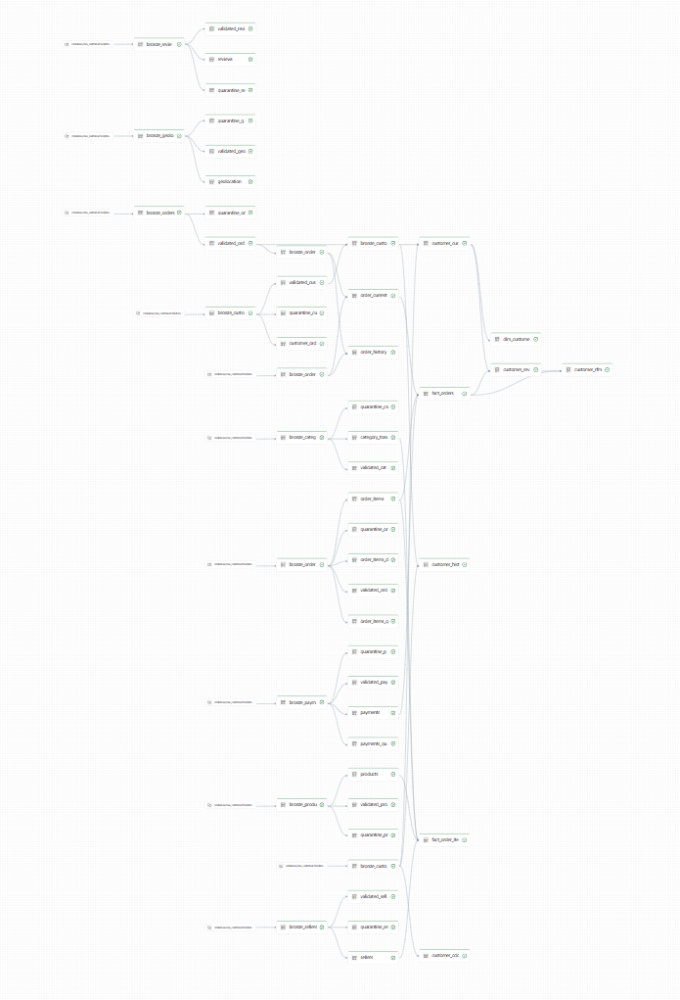
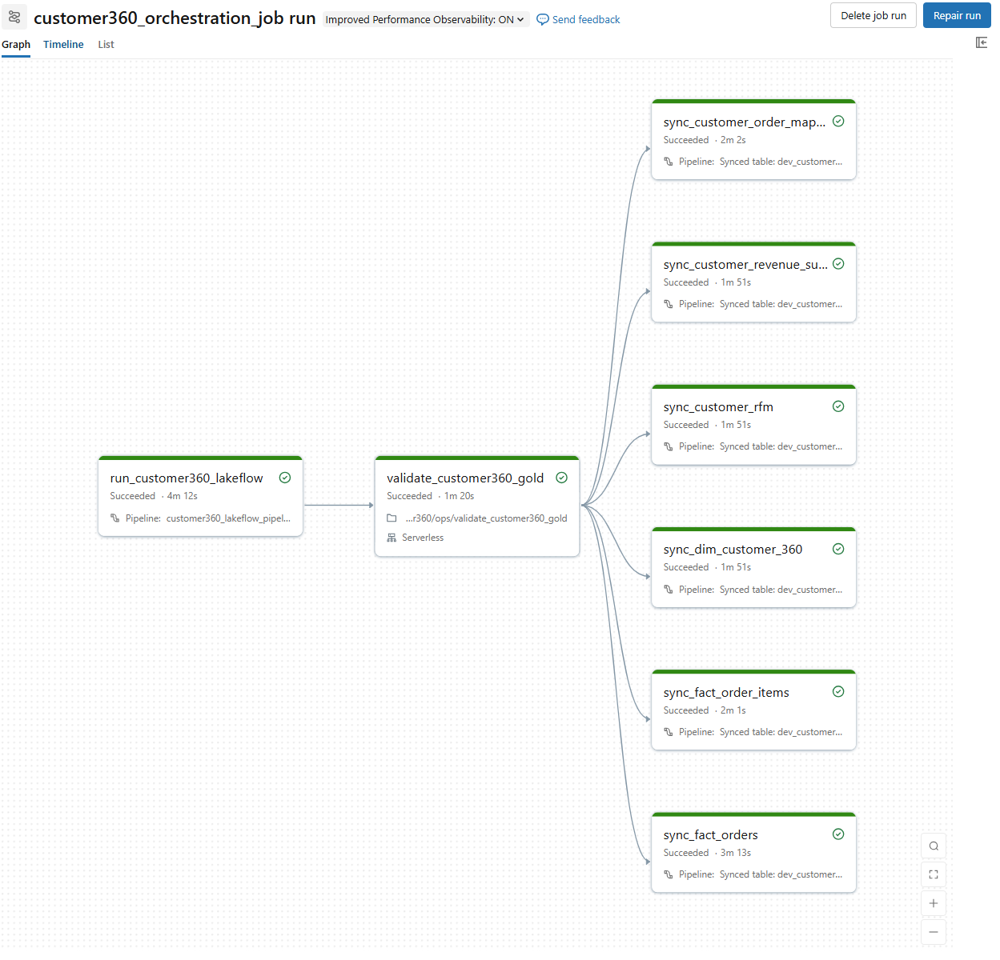
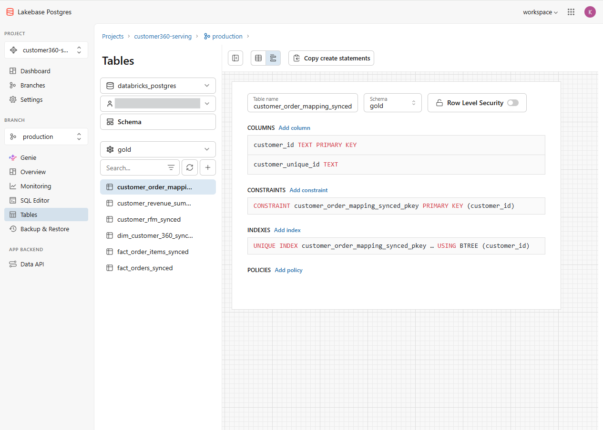
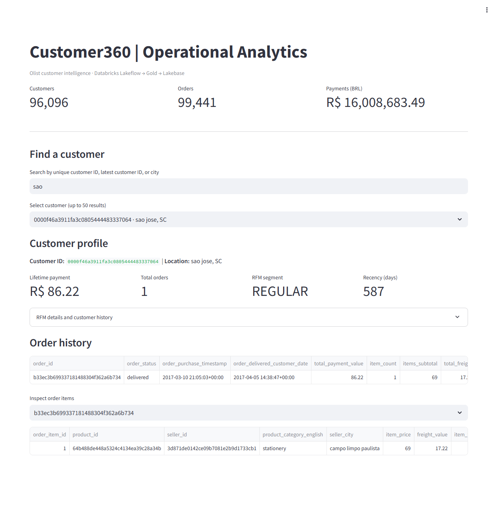
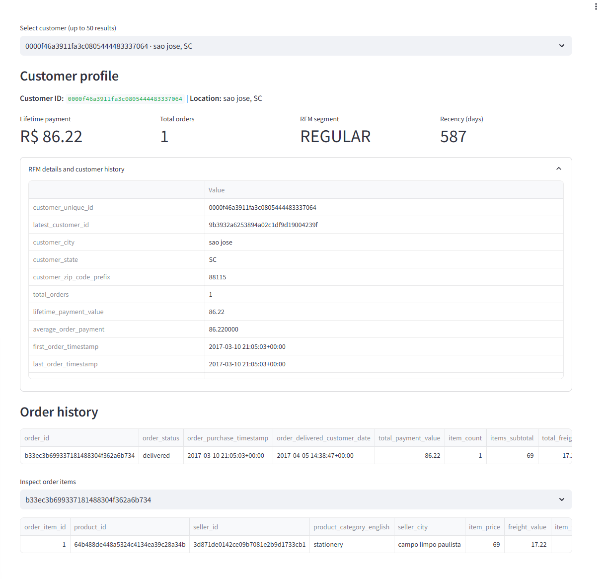

Lakeflow pipelineTransformation graph and dependencies.
Explore an end-to-end Customer360 lakehouse built with Databricks, PySpark, Delta Lake, simulated CDC/SCD2, Lakebase PostgreSQL and Streamlit.
Select a stage to explore its responsibility, tools and role in the platform.
CDC events in this portfolio are simulated for demonstration—not a live source-system CDC feed.
Raw Olist entities land in Unity Catalog Volumes. Auto Loader and schema-aware ingestion form the entry point to the lakehouse.
Choose a phase to inspect the engineering objective and evidence to demonstrate.
Establish the dev_customer360 catalog, Bronze/Silver/Gold/Ops schemas and Volume for Olist landing data. Evidence: catalog/schema tree and successful access to landing files.
Figures captured during project implementation; these are not live-refreshing metrics.
| Dataset | Rows |
|---|---|
| dim_customer_360 | 96,096 |
| fact_orders | 99,441 |
| fact_order_items | 112,649 |
| customer_revenue_summary | 96,096 |
| customer_rfm | 96,096 |
| customer_order_mapping | 99,446 |
Pipeline, validation gate and six parallel sync tasks.
Latest audit state and append-only run history.
Controlled failure and repair tested.
Six Gold datasets synchronized to Lakebase.
Illustrative SQL examples for interview discussion. Confirm table and column names against the current catalog before execution.
SELECT 'dim_customer_360' AS dataset, COUNT(*) AS row_count FROM dev_customer360.gold.dim_customer_360 UNION ALL SELECT 'fact_orders', COUNT(*) FROM dev_customer360.gold.fact_orders UNION ALL SELECT 'fact_order_items', COUNT(*) FROM dev_customer360.gold.fact_order_items;
SELECT customer_unique_id, COUNT(*) AS n
FROM dev_customer360.gold.dim_customer_360
GROUP BY customer_unique_id
HAVING customer_unique_id IS NULL
OR COUNT(*) > 1;Click a screenshot to enlarge it. These paths point to the existing repository's docs/screenshots/ folder.





Explore implementation folders, project documentation and architecture notes in the source repository.